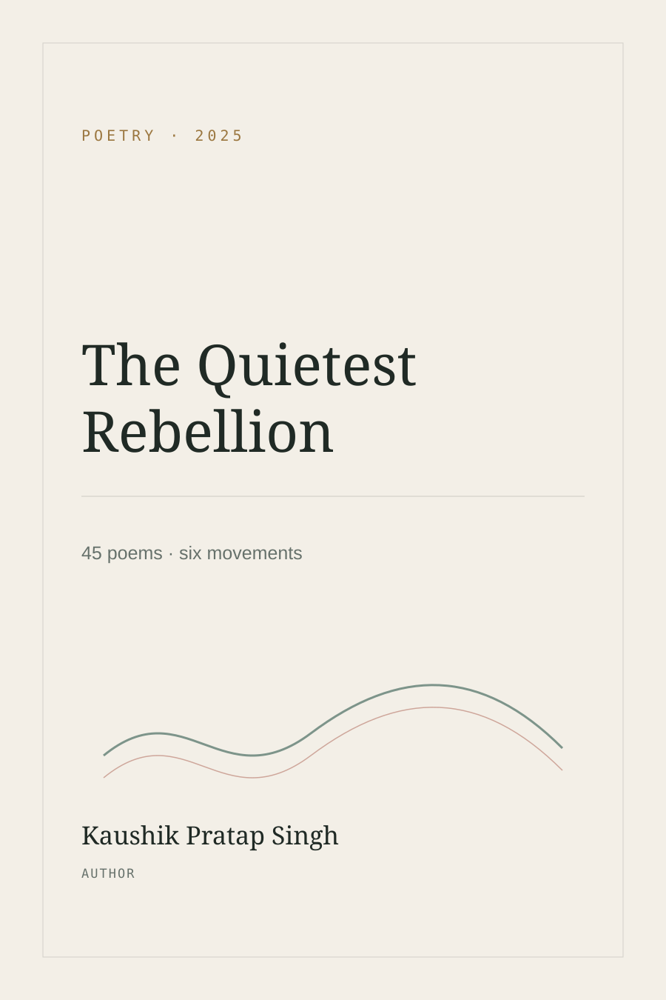

I have always been trying to understand something.
Sometimes it was a flower pot. Sometimes a volleyball. Sometimes a chessboard. Sometimes a thought I could not explain. Eventually, one of those questions became a research project about the brain.
Begin the journeyThis is not a résumé. It is a record of the things that shaped me: the people, places, habits, experiments, failures, obsessions, and small victories that gradually became a life.
Before I had a plan,
I had things to make.
My earliest education in curiosity was ordinary and handmade. It happened at home, in school corridors, in rooms full of half-finished attempts.
My mother taught me to make things with my hands.
We made flowering pots from cement, water and sand. My first one looked nothing like what I imagined. I tried again. I learned how shape comes from repetition. She also guided my handwriting, drawing and painting, and encouraged dance from the beginning of my education. Looking back, those small acts gave me an early permission to experiment without needing to know what the final result would be.
“I learned creativity before I had a word for it.”
Making, repairing, trying again
Flower pots, drawing, painting, handwriting, dance, gardening — not achievements then. Just things I wanted to learn.
The first time I realised I could question back.
My first major class interaction happened in Class 4. My science teacher called me and a classmate in front of the entire class and turned the lesson into a challenge. The class would question the two of us from the science textbook, and later we would question the class while everyone else tried to answer.
Surprisingly, the two of us won against the entire class. I remember that I sometimes asked questions that were outside the textbook — simple questions, perhaps, but questions that felt more connected to how things actually work in life. Looking back, that was one of my earliest experiences of enjoying curiosity in public.
The first time my own code came alive.
In Class 6, programming entered my life through QBASIC as part of my syllabus. I wrote my first program and watched it run without an error. The feeling was difficult to measure. It felt as though I had created a tiny universe inside a computer — a system that existed because I had written it into existence.
From that point onward, computers stopped being something I merely used. They became something I wanted to understand and create with.
Learning to build things with computers.
My brother played an important role in this part of my journey. He was the first person I saw create a basic interface and a calculator. I was fascinated by how he had made something like that himself, so I began learning from him.
Later, the two of us and a friend formed our own little trio. We kept building things together — sometimes websites, sometimes calculators, sometimes small games. I learned a lot from the two people beside me, from cycling and sports to app building and gaming.
Looking back, this was probably my earliest experience of learning by making rather than learning only by studying.
The first time writing became a competition.
My first major creative-writing competition was the Tata Steel Essay Writing Competition. I was not expecting any prize because it was my first time participating, but I finished in the top three.
That moment gave creative writing a new place in my life. It showed me that something I did simply because I enjoyed expressing ideas could also become something I could develop seriously.
The first drawing someone else believed in.
One day in Class 6, I drew a unicorn standing on a cliff overlooking a mountain. It was my first drawing made with oil pastels. I showed it to my class teacher, and she liked it enough to put it on the classroom board.
It was a very small moment, but I remember it because something I had made privately suddenly had a place in a public space.
Learning that curiosity works beyond the textbook.
In Class 8, I participated in the Science Olympiad at the district level and won first prize. I had participated in mathematics competitions before, but this became a particularly important milestone for me.
I had always tried to explore beyond the textbook, and that habit gradually gave me more than academic knowledge. It gave me material to talk about, helped me connect ideas from different places, and developed an interest in exploration and scientific curiosity.
Then a volleyball found a wall.
I was hesitant to play with other students and, at first, I did not know how to play. So I bought a volleyball and learned at home. I watched tutorials, then copied what I saw: toss, pass, receive, serve. I switched off the fan so I would not hit anything. The wall became my coach. For two years it returned every mistake without judgment. The room filled with sweat and ball marks. When I see those marks now, they still feel like evidence of something I built from repetition.
“I think the wall was my coach.”
And then the game finally became a real game.
I finally got the chance to play in the Annual Sports Meet. Green House and Red House reached the volleyball final. I played centre. One of the players across the net pushed me hardest, especially with his service. I was never a great player; I just got good enough through those years of practice. We won the tournament. What stays with me is not the medal or the score. It is the distance between knowing nothing and standing on that court.
Worthy opponents
Good opponents make you pay attention. The strongest players especially made me work harder, and the tournament became better because of that pressure.
The wall marks
A physical reminder that progress can look boring while it is happening — toss, receive, repeat — until one day it looks like a win.
Chess brought the same curiosity indoors.
I first played chess when I was very young. Before I knew any formal openings, we invented our own. Mine was based on symmetry: a pattern of alternating pawns. Years later, in Class 11, I returned to the game and decided not to drop it this time. I began studying openings, middlegames and endgames, using Chess.com and Lichess, and eventually moved into competitive play through FIDE Online Arena. Earning Arena Candidate Master mattered, but chess became more valuable to me as a training ground for thought: planning, decision-making under pressure, and improving after a bad move.
Read the longer story →School kept giving me situations where the plan had to survive real people.
I choreographed boys for school programmes from Independence Day to farewell. It was usually chaos. Someone would refuse a move at the last minute; someone else would invent a new idea in the middle of rehearsal. A friend was one of the people who pulled me into dancing even when I did not want to participate. We had plenty of problems, but we also learned from one another. I saw the same thing in rangoli and candle decoration: when nobody wanted to start, somebody had to make the first mark.
My first rangoli
I had never made one before. We ended up making an Indian map with two other boys.
Andaman & Nicobar theme
I researched the development project, proposed it as a candle-decoration theme, and our boys' group won first prize.
Then I learned that leadership is mostly about walking with people.
Becoming School President in Class 11 was my first real experience of leading people who were also my peers. I had to work under pressure, handle contradictions, bring people toward common ground, organise programmes, maintain discipline, and encourage others to contribute. I learned the difference between assigning work and building trust. More importantly, I learned that I did not want to lead by walking ahead of everyone. I wanted to walk with them.
Enter the leadership chapter →When I couldn't explain myself,
I started writing myself down.
The book was never a plan. It began as private reflection during Class 11 and slowly became a public experiment in making something real.

A private practice that became a public book.
I was trying to understand myself and exploring solitude. Writing down what I learned and what I felt made room for new thoughts and insights to arrive.
I never began with the intention of writing a book. I made a rough manuscript over many months and still was not sure it should become public. Eventually the project became a second challenge: could I take something completely internal, learn the publishing process myself, and put it into the world at zero cost?
I researched how independent publishing works, handled the process myself, and eventually published the book with an ISBN. The achievement I remember most is not that a book exists. It is that I took something I had only ever kept inside and carried it all the way into the world.
45 poems · use the arrows, keyboard, or swipe
One question became
a research journey.
I did not enter BCI with prior knowledge, a laboratory, or funding. I entered with a question and then learned enough to turn it into a roadmap.
Why can we track speed, heart rate and blood pressure — but not the brain?
This single question is what pulled me into brain-computer interfaces. I began exploring a rough idea and gradually converted it into an actionable system with hardware, application, and signal-processing / machine-learning layers. Because I was still a student without a lab or funding, I made a deliberate decision: build and verify the software and processing pipeline first. The physical hardware belongs to a future paper when I can access the environment needed to build it properly.
Can the pipeline see through noise?
I replaced toy sine-wave assumptions with stochastic simulation, built denoising methods, and compared them before trusting them on real data.
Does it survive real human EEG?
I moved to the PhysioNet BCI2000 dataset and rebuilt the pipeline around a 50-subject cohort. Thirty-five script revisions became part of the verification trail.
What if my target hardware is different?
I discovered the 64-channel research dataset did not match the 4-channel dry-electrode form factor I ultimately wanted to build around, so I constructed a closed-loop 4-channel simulator and calibration workflow instead of overstating what the data proved.
Can another dataset challenge it?
I used the STEW dataset as an independent real-human cross-check for geometric and spectral ground truth.
Verification became more important to me than a flattering number.
The repository records bugs, revisions, a leakage finding that produced a misleading result on random noise, and the decision to keep those mistakes visible. I do not describe the work as proof that I have mastered neuroscience, biophysics, signal processing, hardware and machine learning. I describe it as a verification-first learning journey in which I tried to make every claim traceable.
Open the full research archive →Open the GitHub journey ↗This is where the archive pauses.
Not because the story is finished. Only because this is the latest page of it.
Research
I am continuing the BCI work, documenting what is verified, what is unresolved, and what belongs in the next paper rather than the current claim.
Words
I have started publishing articles on topics I care about and continue to use writing as a way of thinking, not only as a way of presenting conclusions.
Experiments
I keep returning to the same instinct I had as a child: take something apart, understand how it works, and make my own version when I cannot find the path I want.
No final version yet.
I do not want this website to pretend that I have already arrived. It is meant to change as I do.